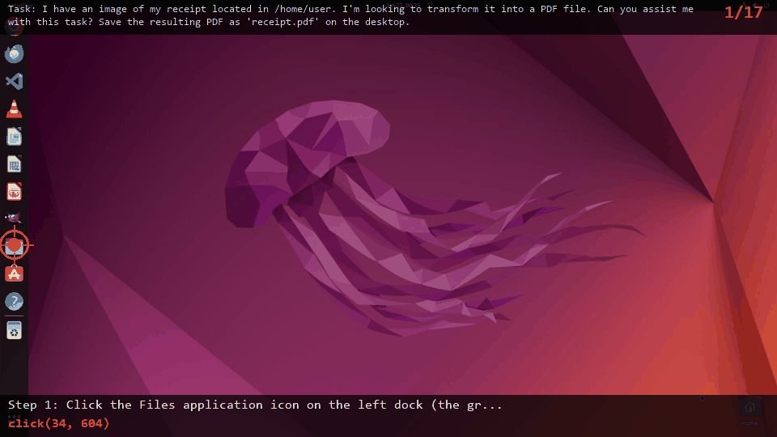
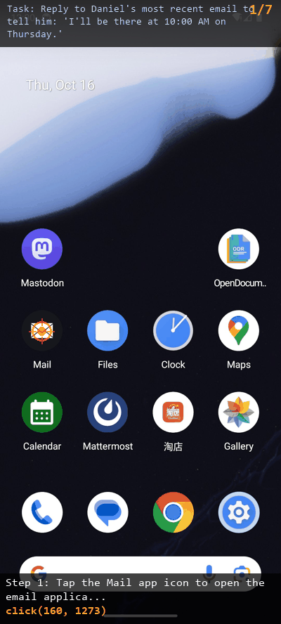

UI-MOPD: Multi-platform On-Policy Distillation for Continual GUI Agent Learning
1Tsinghua Shenzhen International Graduate School, Tsinghua University, 2Xiaomi
3Harbin Institute of Technology, Shenzhen, 4Zhejiang University, 5Peng Cheng Laboratory


1Tsinghua Shenzhen International Graduate School, Tsinghua University, 2Xiaomi
3Harbin Institute of Technology, Shenzhen, 4Zhejiang University, 5Peng Cheng Laboratory
Recent advances in multimodal foundation models and agent systems have driven GUI agents from single-platform task execution toward cross-platform interaction. However, building multi-platform GUI agents remains challenging. On one hand, high-quality and executable cross-platform interaction trajectories are still scarce, and existing data often suffer from limited platform coverage. On the other hand, different platforms exhibit distinct interaction conventions, making joint or continual training prone to behavioral pattern mixing, platform-specific capability degradation, and catastrophic forgetting. To address these challenges, we construct Uni-GUI, a high-quality cross-platform GUI interaction dataset, and propose UI-MOPD, the first method that incorporates multi-teacher on-policy distillation into continual learning for GUI agents. UI-MOPD dynamically selects a platform-specific teacher according to the current environment and transfers platform-specific behavioral priors to a shared policy through platform-conditioned distillation, enabling adaptation to new platforms while preserving capabilities on existing ones. Experiments on OSWorld and MobileWorld show that UI-MOPD achieves task success rates of 38.2% and 12.0%, respectively, demonstrating its effectiveness in balancing cross-platform capability retention and new-platform adaptation.

Figure 1. Motivation of UI-MOPD. Naively combining desktop and mobile signals, as in model merging or mixed SFT, can mix platform-specific behavioral conventions and produce an averaged policy. UI-MOPD uses platform-conditioned routing and multi-teacher on-policy distillation to integrate platform-specific expertise into a shared GUI agent.
Fine-tune Qwen3-VL-32B-Thinking on the Uni-GUI dataset to obtain platform-specific expert teachers: a desktop teacher and a mobile teacher.
Train a shared student policy (Qwen3-VL-8B-Thinking) with reinforcement learning and platform-conditioned teacher routing for continual cross-platform learning.

Figure 2. Overview of the UI-MOPD training pipeline. Stage 1 performs supervised fine-tuning to obtain platform-specific teachers. Stage 2 applies multi-teacher on-policy distillation with platform-conditioned routing, adaptive KL masking, and structured outcome reward.
Routes each rollout to the corresponding platform-specific teacher based on the current environment type.
Efficient single-sample KL divergence estimator that avoids full vocabulary computation, reducing memory and compute overhead.
Removes teacher penalty when task reward is already sufficient, preventing over-regularization.

Figure 3. Overview of the Unified Cross-Platform Data Collection Harness used to build the Uni-GUI dataset.
Baselines and integration strategies on OSWorld and MobileWorld (Table 1).
| Method | OSWorld | MobileWorld |
|---|---|---|
| General Models | ||
| SeedVL-1.5 | 34.1% | -- |
| Qwen3-VL-8B-Instruct | 33.9% | 9.4% |
| Qwen3-VL-8B-Thinking | 33.9% | 7.7% |
| Qwen3-VL-32B-Instruct | 32.6% | 9.0% |
| Qwen3-VL-235B-A22B-Instruct | 31.6% | 9.5% |
| Qwen3-VL-235B-A22B-Thinking | 38.1% | -- |
| GUI Models (Single-Platform) | ||
| OpenCUA-7B | 28.2% | -- |
| OpenAI CUA o3 | 31.3% | -- |
| OpenCUA-32B | 34.8% | -- |
| GUI Models (Multi-Platform) | ||
| UI-TARS-72B-DPO | 27.1% | -- |
| UI-TARS-1.5-7B | 27.4% | -- |
| GELab-Zero-4B | 31.9% | 10.9% |
| GUI-Owl-7B | 34.9% | 4.5% |
| GUI-Owl-32B | -- | 5.5% |
| Integration Strategies | ||
| Mixed-SFT | 35.0% | 6.4% |
| Model Merge (Weight Averaging) | 36.5% | 6.8% |
| Model Merge (TIES Merging) | 36.8% | 0% |
| UI-MOPD (Ours) | 38.2% | 12.0% |
UI-MOPD achieves state-of-the-art balanced cross-platform performance, demonstrating effective capability retention on desktop while significantly improving mobile task success rate.
Teacher-student analysis on OSWorld and MobileWorld (Table 2).
| Method | OSWorld | MobileWorld |
|---|---|---|
| Base Models | ||
| Qwen3-VL-8B-Thinking | 33.9% | 7.7% |
| Qwen3-VL-32B-Thinking | 41.0% | 9.4% |
| Single-Platform SFT (8B) | ||
| 8B SFT on OSWorld | 35.8% | 0% |
| 8B SFT on MobileWorld | 35.8% | 12.8% |
| Platform-Specific Teachers (32B) | ||
| Desktop Teacher, 32B | 46.3% | – |
| Mobile Teacher, 32B | – | 16.2% |
| UI-MOPD (Ours) | 38.2% | 12.0% |
UI-MOPD effectively distills knowledge from platform-specific 32B teachers into a shared 8B student, achieving balanced cross-platform performance that surpasses single-platform fine-tuning.
General GUI grounding, visual understanding, and AndroidControl results (Table 3).
| Model | AndroidControl* | ScreenSpot-Pro | ScreenSpotV2 | OSWorld-G |
|---|---|---|---|---|
| Qwen3-VL-8B-Thinking | 78.73% | 43.71% | 91.27% | 52.13% |
| Model Merge (TIES Merging) | 74.01% | 37.13% | 88.60% | 47.16% |
| UI-MOPD (Ours) | 80.05% | 43.14% | 90.88% | 52.84% |
UI-MOPD preserves GUI grounding and visual understanding capabilities while improving interactive task performance, unlike static parameter merging which shows clear degradation.


Watch our 8B student model complete real tasks step by step on both platforms.
Open file manager, locate receipt image, print to PDF, save to Desktop.

Open Mail app, find Daniel's email, compose and send reply.

@misc{lian2026uimopdmultiplatformonpolicydistillation,
title={UI-MOPD: Multi-Platform On-Policy Distillation for Continual GUI Agent Learning},
author={Niu Lian and Alan Chen and Zhehao Yu and Chengzhen Duan and Fazhan Liu and Hui Liu and Pei Fu and Jian Luan and Yaowei Wang and Shu-Tao Xia and Jinpeng Wang},
year={2026},
eprint={2607.04425},
archivePrefix={arXiv},
primaryClass={cs.CL},
url={https://arxiv.org/abs/2607.04425},
}